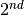
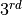
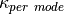

kALDo. Thermal transport in crystalline and non-crystalline solids. Documentation Introduction Quick Install Using pip and virtualenv Development mode Interfacing with Other Codes LAMMPS setup Quantum Espresso setup Output Storage Default Storage Alternative Storage Code Architecture Main Features Examples Copyright Acknowledgements Other codes Project template How to contribute changes Checklist for updates Versioneer Auto-version Theory Introduction Theory Boltzman Transport Equation Quasi-Harmonic Green Kubo Benchmarks applications Ab initio silicon diamond Amorphous silicon References API ForceConstants API Reference Phonons API Reference Conductivity API Reference Tutorials Silicon diamond tutorial Remote fetch source code from Github Remote fetch supplyment files Remote fetch precomplied LAMMPS Integrate LAMMPS Into Python Thermal transport simulation for silicon-bulk Compute  and  order IFCS. Create phonons object Calculate conductivities for infinite-size sample Visualize harmonic properties using built-in plotter Access and visualize properties calculated during simulations Calculate and visualize  and Amorphous silicon tutorial Remote fetch source code from Github Install Kaldo from source Fetch supplyment data remotely Remote fetch precomplied LAMMPS Integrate LAMMPS Into Python Thermal transport simulation for Amorphous-Silicon (a-Si) Read in force constant objects from folder Create phonons object Access and visualize properties calculated during simulations Calculate and visualize and Run a-Si simulation with varied temperature and third bandwidth kALDo: Anharmonic Lattice Dynamics¶ Index Module Index Search Page